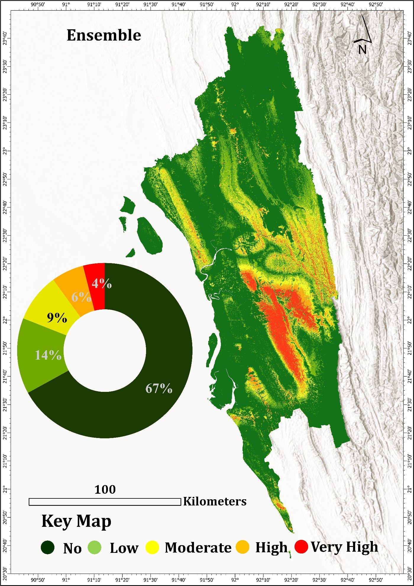
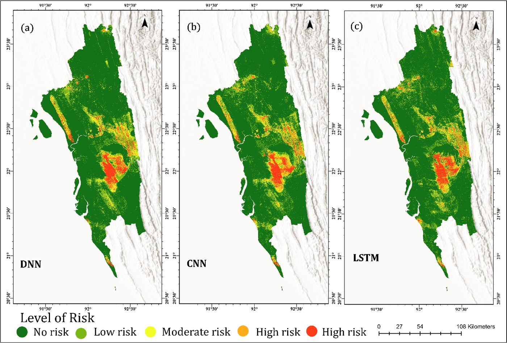
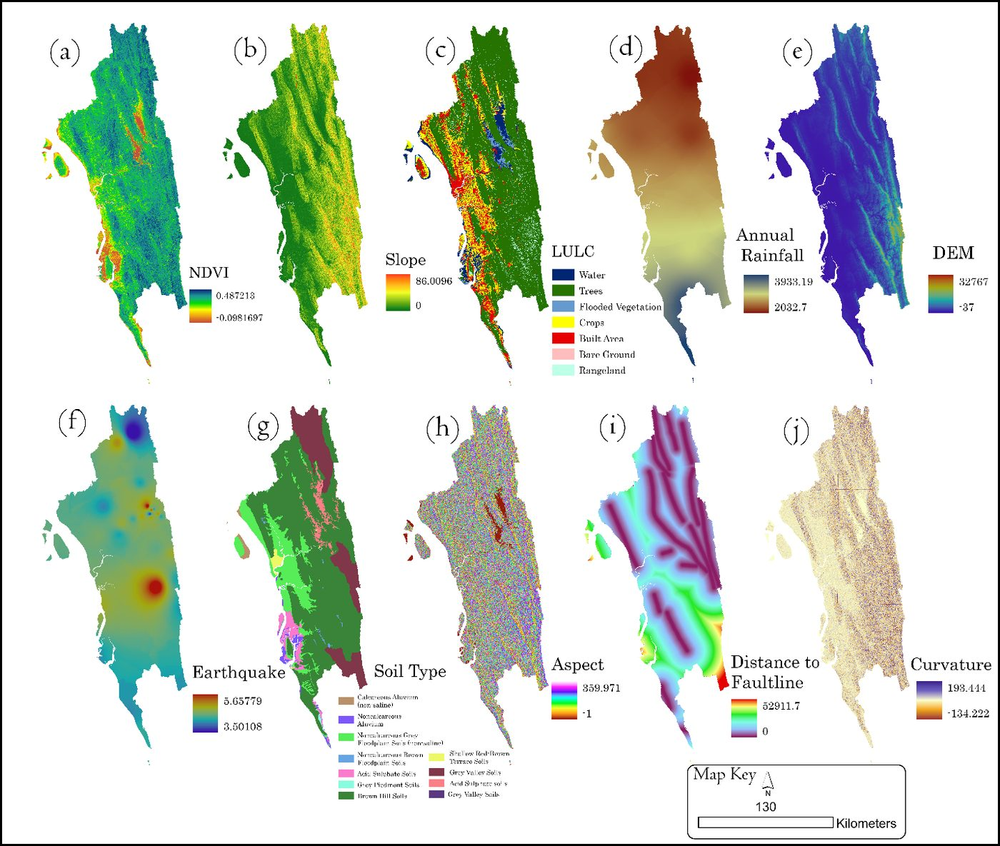
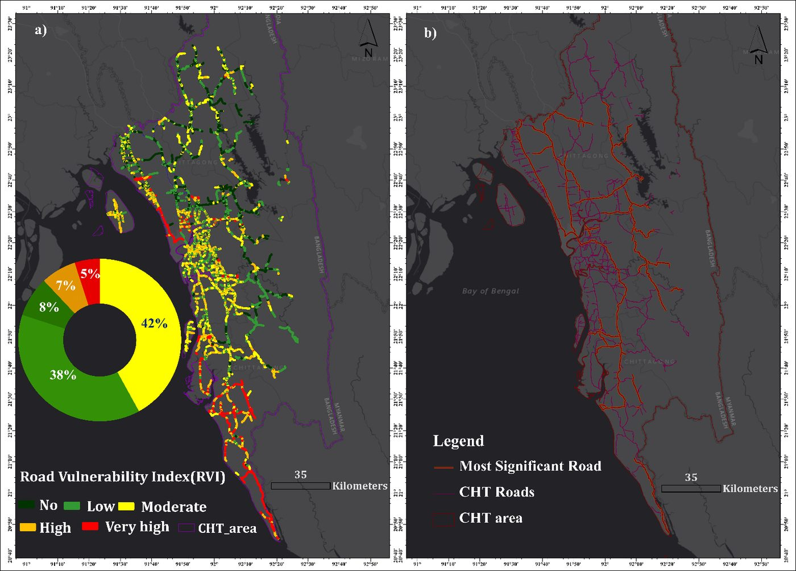
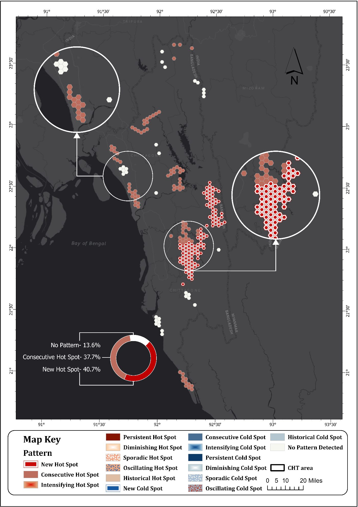
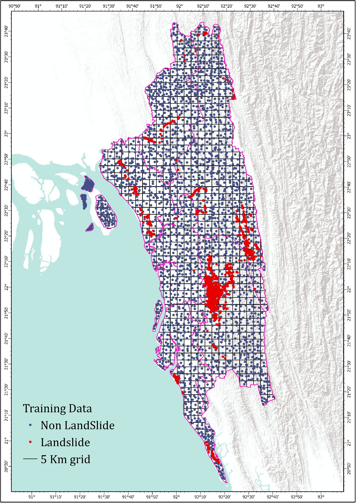

This study predicts landslide-prone zones across the Chittagong hilly region using an ensemble of deep learning models. Historic landslide events trained the models, which then projected future susceptibility. The framework also builds a road vulnerability index to flag transport links most exposed to slope failure.





